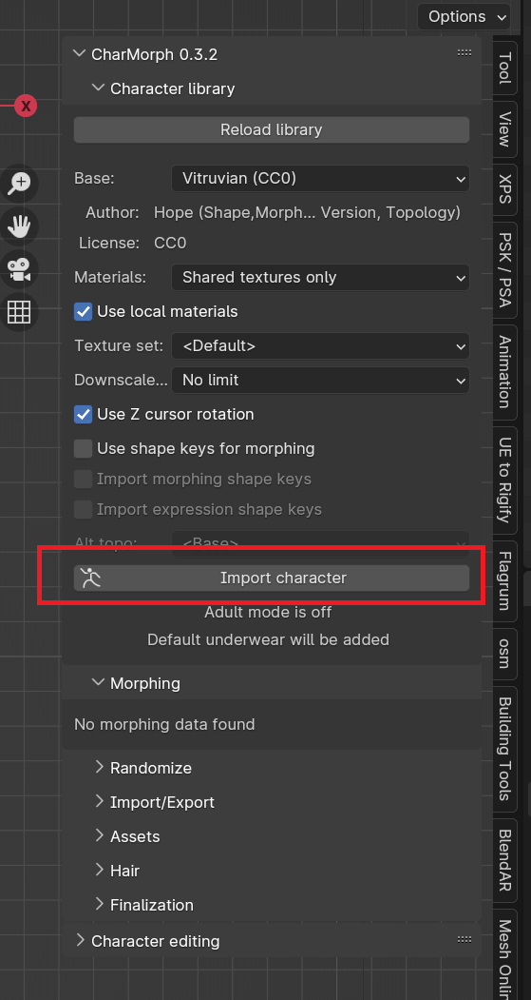
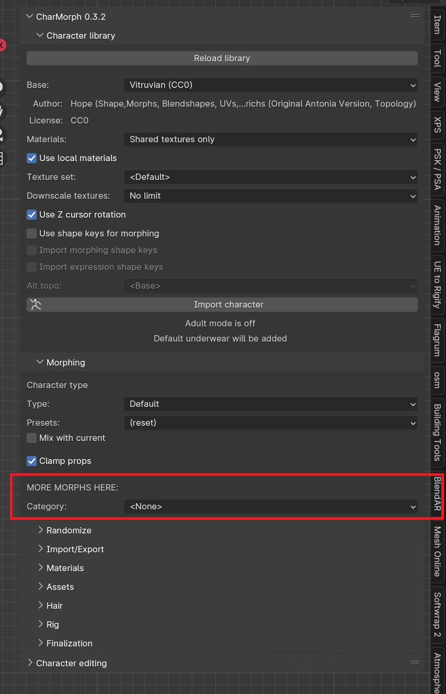
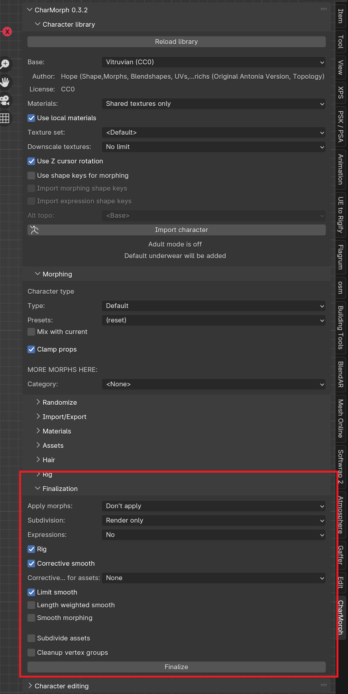
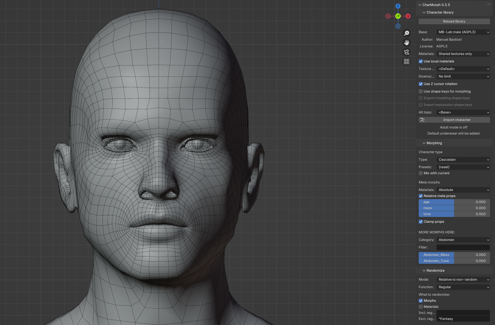
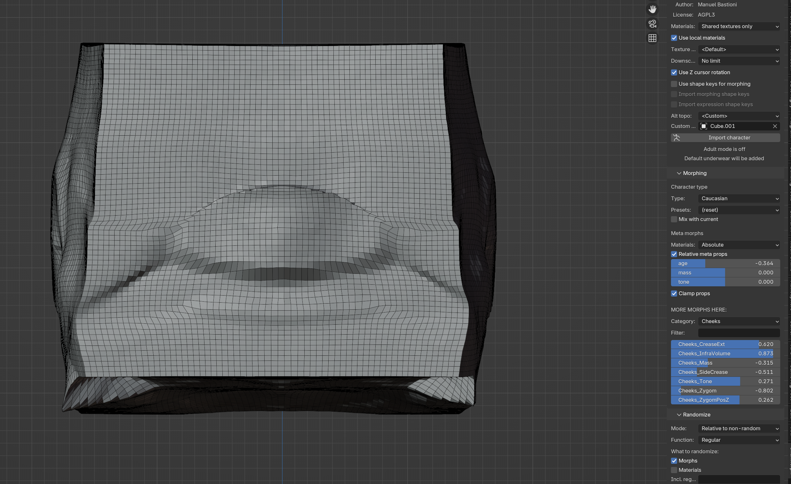
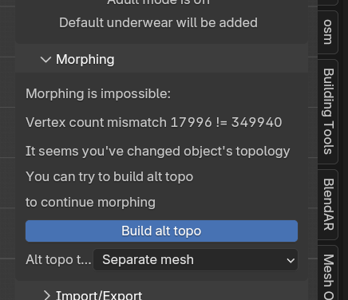

Creating A Character¶
Base¶
Every Character starts with a Base, Be sure to choose carefully and consistently for your characters and projects. Here are the list of bases provided by default:
- Antonia:
Creative Commons Attribution
- MB-Lab:
GNU Affero General Public License
- Reom:
Creative Commons Attribution
{kind=link}
Once you have chosen a character you will need to import the character to your scene to start changing it.
{kind=link}
Select Import Character
Morphing¶
This is where you will be doing most of the work in Charmorph. Every Base has dozens upon dozens of potential variation
{kind=link}
Finalization¶
Finalization is a neccesary step to complete a character, After finalization, morphs will be lost and the character if chosen will be rigged.
{kind=link}
- Apply Morphs:
Change Shapekey Settings
- Rig:
Selects Rig from List
- Subdivision:
Applies Subdivision Surface Settings
- Corrective Smooth:
Applies Corrective Smooth Modifier, this fixes deformations such as arm and knee bending
Select Finalize
Introduction to Alt-Topo¶
Depending on your needs for a given project, you will be unsatisfied with a given character’s topology, either it is too high or too low, has the wrong edge flow or a multitude of other problems. Charmorph has a solution called Alternative Topology or Alt Topo for short. Alt Topo allows users to retarget a given Charmorph character onto any topology, no matter how arbitrary. It can range from a high poly voxel remesh to the default cube.
Default Topology:
{kind=link}
Voxel Remesh Alt Topo:

Default Cube Alt Topo:
{kind=link}
Using Alt-Topo¶
You might have been introduced to Alt Topology by applying Topology altering modifiers to a Charmorph generated mesh. And saw this notice
{kind=link}
Selecting Build Alt Topo will retarget the modified topology to work with charmorph’s systems.
However, it is better practice to import a character with the Custom Alt Topo option before importing the mesh, because it copies the mesh used as a reference rather than overwriting it.
{kind=link}